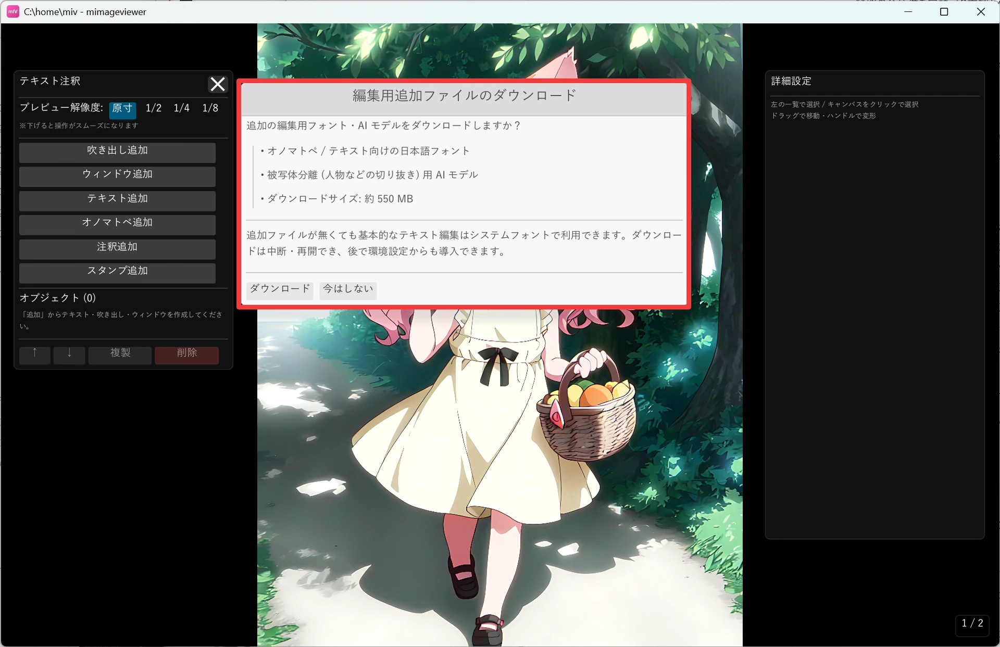
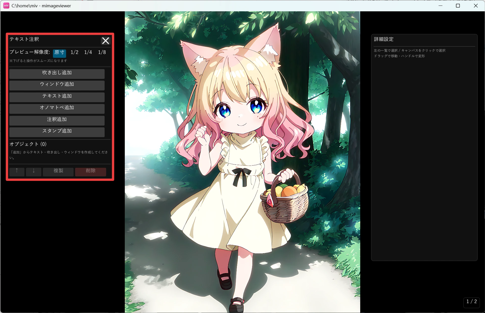
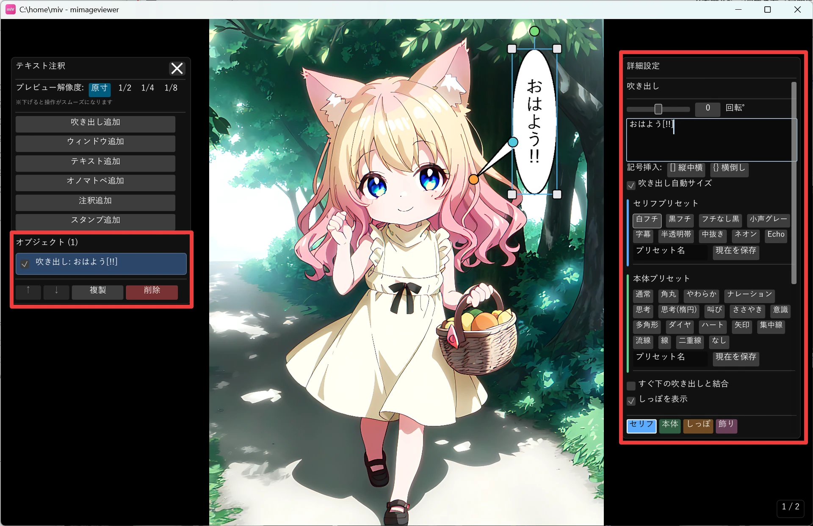
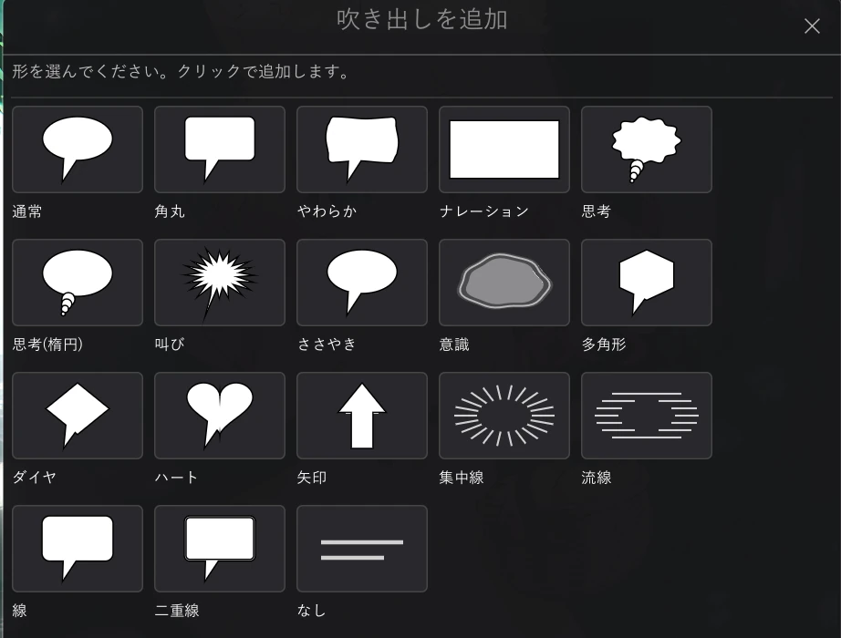
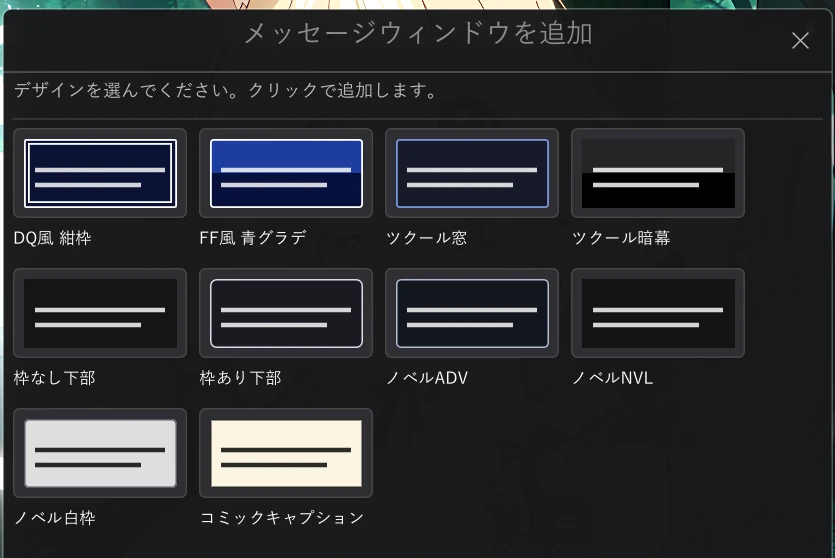
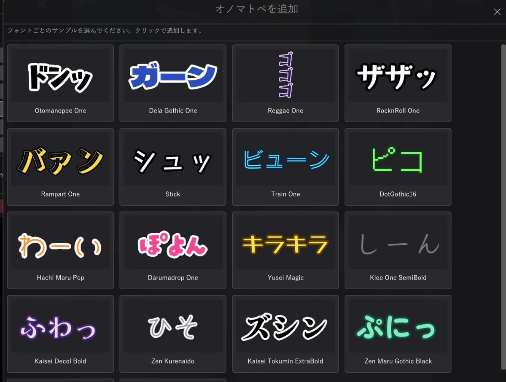
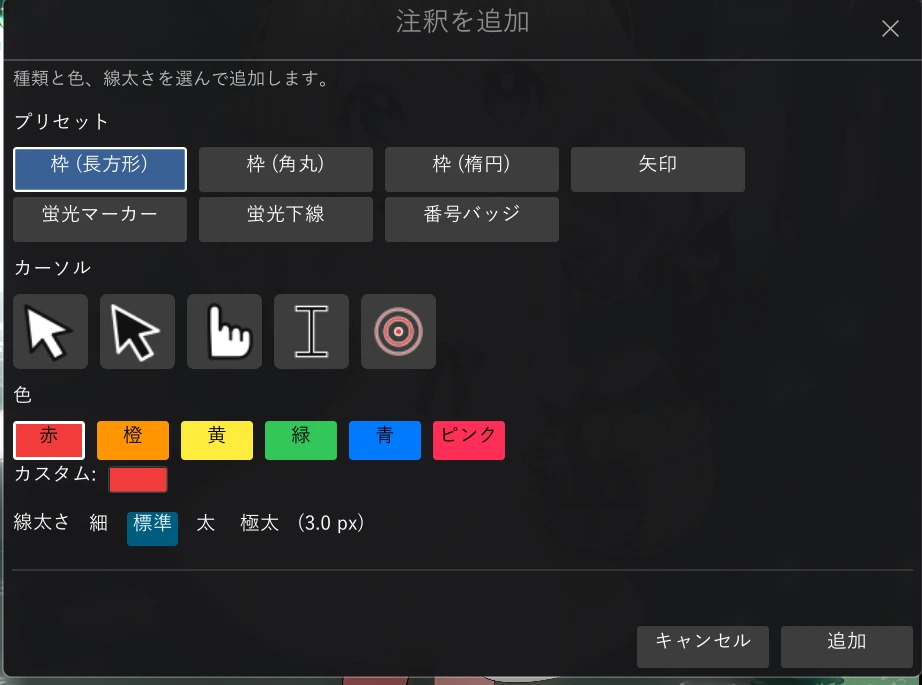
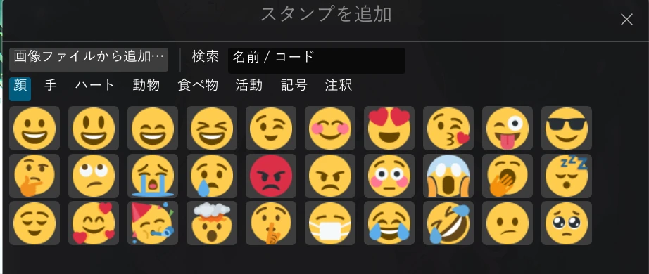

吹き出し・テキスト・注釈を入れる
画像の上に、漫画のような吹き出し・メッセージウィンドウ・装飾テキスト・スタンプを重ねたり、 スクリーンショットの説明に使う強調枠・矢印・蛍光マーカー・番号バッジ・カーソルを配置したりできる機能です。 元の画像ファイルは一切書き換えず、保存・コピー・エクスポート時にだけ画像へ焼き込まれます。
はじめに — 追加ファイルとプレビュー解像度
テキスト注釈を初めて使うときは、編集用の追加ファイルをダウンロードするかをたずねる画面が出ます。 オノマトペ / テキスト向けの日本語フォントと、被写体を切り抜くための AI が含まれます（合計およそ 550 MB）。
- 基本的にはダウンロードをおすすめします。装飾フォントや被写体の切り抜きが使えるようになり、表現の幅が広がります。
- 「今はしない」でスキップしても、システムに入っているフォントで基本的なテキスト編集は使えます（一部の装飾フォントや被写体の切り抜きは使えません）。
- ダウンロードは途中で中断・再開でき、後から環境設定でも導入できます。

1. テキスト注釈モードを開始する
フルスクリーン表示中に、画像補正パネルのヘッダー右側にある吹き出しアイコンを押すとテキスト注釈モードに入ります （Ctrl+T でも開始できます）。 左側に注釈の一覧と追加ボタン、右側に編集パネルが表示されます。
- 画像補正パネルの吹き出しアイコンでテキスト注釈モードを開始します（Ctrl+T でも開始できます）。
- 左パネルの追加ボタンから、配置したい注釈の種類を選びます。
- 配置した注釈はクリックで選択し、右パネルで内容を編集。キャンバス上ではドラッグで移動、ハンドルで拡大縮小・回転できます。
- Esc または Ctrl+T でモードを終了します（フルスクリーンは継続したままです）。

2. 吹き出し・テキスト・スタンプを配置する
左パネルの追加ボタンで、目的に応じた注釈を配置します。
| 追加ボタン | できること |
|---|---|
| 吹き出し追加 | セリフを入れる吹き出し。「なし」を含む 18 種類の形から選べ、しっぽの向きも調整可能。すぐ下の吹き出しと結合してひと続きに見せることもできます |
| ウィンドウ追加 | ノベルゲーム風の文章枠。背景・枠・名前プレートなどを設定できます |
| テキスト追加 | 枠のない装飾文字（袋文字・影・発光など） |
| オノマトペ追加 | 効果音のような装飾文字（装飾フォントの追加パックが必要） |
| 注釈追加 | 強調枠・矢印・蛍光マーカー・下線・番号バッジ・カーソル |
| スタンプ追加 | 絵文字や好みの画像を貼り付け |
吹き出し・ウィンドウ・テキスト・オノマトペの本文は共通の「セリフ」タブで編集します。フォント・文字サイズ・ 文字色に加え、横書き / 縦書き、袋文字や外フチ・影・発光といった文字効果も設定できます。

3. 注目箇所を示す図形注釈
「注釈追加」を押すと、ソフトの操作説明でボタンを囲む、写真の注目箇所を指す、文書の文字を目立たせるといった 用途に向いたプリセットが並びます。
- 枠（長方形 / 角丸 / 楕円）: 輪郭だけの図形。塗りつぶしもオンにできます
- 矢印: 回転ハンドルで向きを変えられる、説明図用の矢印
- 蛍光マーカー・下線: 下の文字を潰さずに色が重なる半透明の帯。一覧の重なり順どおりに塗り重ねられます
- 番号バッジ: 手順の説明に使う丸数字。追加するたびに続きの番号が自動で入ります
- カーソル: 白矢印・黒矢印・指差し・I ビーム・クリックリングの 5 種類
色は赤・橙・黄・緑・青・ピンクのパレットまたはカスタム色、線太さは細・標準・太・極太から選べます。 前回選んだプリセット・色・線太さはアプリを終了するまで引き継がれるので、同じ調子で複数個所を説明するのも簡単です。
4. 位置・大きさ・重なり順を調整する
配置した注釈は、ほかの注釈と同じ操作で調整できます。
| 操作 | 動作 |
|---|---|
| キャンバスでドラッグ | 選択中の注釈を移動 |
| 四隅ハンドル | 拡大・縮小 |
| 回転ノブ | 回転 |
| 左パネルの ↑ / ↓ | 選択中の注釈を前面 / 背面へ（重なり順の変更） |
| 複製 / 削除 | 選択中の注釈をコピー、または削除 |
| Ctrl+Z / Ctrl+Y | 元に戻す / やり直し |
5. 保存とエクスポート
注釈はページごとに自動でデータベースに保存され、次に同じページを開いたときに再描画されます。 元の画像ファイルには一切手を加えません。
- 注釈のあるページには、サムネイル左上にピンク色の「文」バッジが表示され、どのページに注釈を付けたか一目で分かります
- 保存・コピー・比較、および Ctrl+E のエクスポートでは、注釈が画面の表示どおりに画像へ焼き込まれて出力されます
- ZIP / PDF 内のページにも同じように注釈を付けられます
追加できる注釈の一覧
各追加ボタンを押すと、次のような選択画面が開きます。まずはここで「どんな注釈が入れられるか」を眺めてみてください。 配置した注釈はあとから何度でも追加・変更・削除できます。





このほか テキスト追加 は選択画面がなく、枠のない装飾文字（袋文字・影・発光など）をそのまま配置できます。